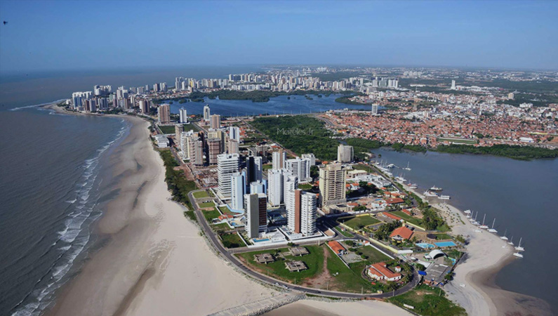

O Maranhão é um estado localizado na região Nordeste do Brasil, conhecido por suas paisagens naturais, como os Lençóis Maranhenses, e sua rica cultura. Sua população é de aproximadamente 7 milhões de habitantes. A capital do estado é São Luís, uma cidade histórica com forte influência colonial. O governador atual é Carlos Brandão. A economia do Maranhão é baseada principalmente na agricultura, na pesca, no setor de serviços e no comércio
